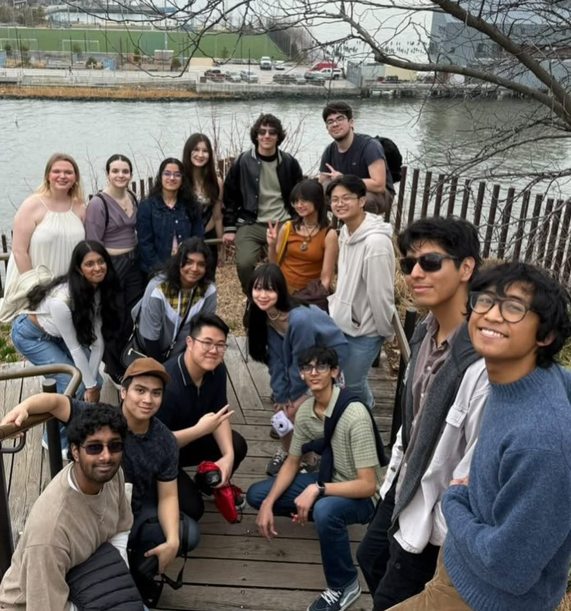
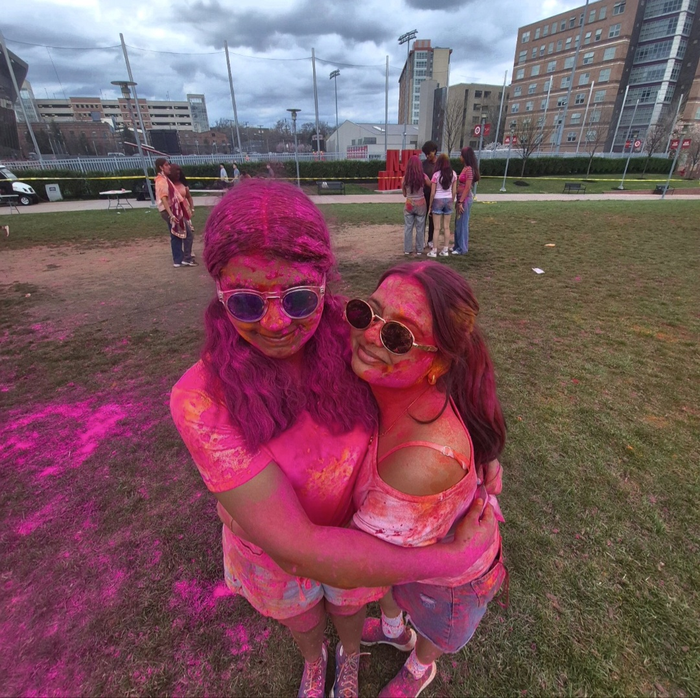
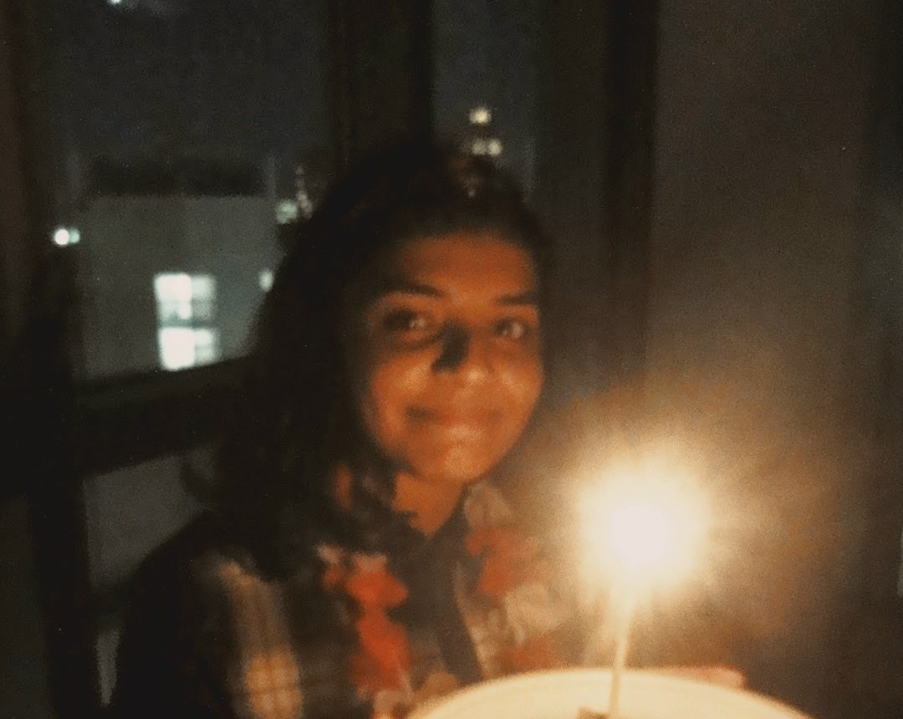
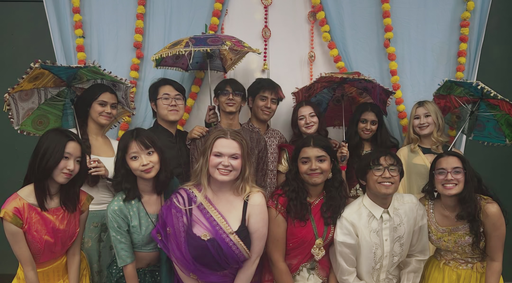

I am a rising Junior at NJIT with a major in Business & Information Systems and a minor in Artificial Intelligence. I am passionate about analyzing data to improve decision-making processes and protect company systems. In the future, I plan to continue my journey of learning and professional growth in the field of business analytics. Throughout my time at NJIT, I have been extremely grateful to the amazing friends that I have made along the way and who have supported me endlessly.


Transitioning to college and living on campus was a huge leap out of my comfort zone. However, stepping into the unfamiliar environment of NJIT allowed me to learn how to adapt and eventually, thrive. Through balancing a heavy course load and campus involvement, I grew into a more confident individual, learning to advocate for myself and manage my priorities effectively.

Sophomore year, I immediately jumped into new campus responsibilities - continuing as NJIT Theatre's Sound Board Operator, taking on a new role as A2 Audio Assistant for NJIT’s Theatre Department, and stepping up as Director of Philanthropy for Alpha Sigma Tau. Each position I took on significantly expanded my leadership skills and ability to learn quickly. At the same time, I leaned into my major through hands-on coursework and decided to challenge myself further by adding a minor in Artificial Intelligence.
